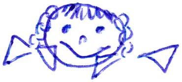

Урванцева Александра Александровна.
Дата рождения:
4 января 1982 г.
Дата смерти, диагноз/причина:
Диагноз - вечность.
Откуда родом / где пенаты:
Северо-Казахская область, город Петропавловск.
Адреса для связи (mail, адрес родителей и прочие контактные адреса и телефоны):
AleksaU_2003@rambler.ru
Любимый кусочек любимой песни. А так же любимый и не любимый цвета:
Облака, белокрылые лошадки.
Облака, что вы мчитесь без оглядки
Прокатите нас, пожалуйста, облака...
Научный интерес / тема диплома, ФИО научного руководителя:
"Художественная жизнь Омска, Новосибирска в конце 1980-1990 годах" - Рыженко Валентина Георгиевна.
Понимание смысла жизни (зачем топчет эту землю):
Смысл жизни - в жизни самой и во всех ее радостях и горестях. Другой вопрос, как будешь переносить горести и с кем делить радости. Но это уже другой вопрос.
Брак - это продолжение любви или насилие над ней?
Смотря, насколько у кого хватит фантазии.
Как относится к сексу до брака:
Нормально.
Как относится к оральному сексу до брака:
Нормально.
Как относится к анальному сексу до брака:
Если кому-то нравится - то зеленый свет для того человека.
Как относится к виртуальному сексу после брака:
Если не получается с реальным партнером (партнершей), то, возможно, для кого-то это - выход.
Впечатления об учёбе / последних пяти годах жизни:
Могу гордо сказать, что последние 5 лет я прожила просто замечательно. Скорее всего, именно эти годы останутся в памяти как самые беспечные и веселые.
Впечатление от курса:
наш курс самый лучший, но мог быть еще лучше.
Самые запомнившиеся моменты жизни, проведённые с сокурсниками:
Экспеда
Как воспринимает себя:

Главная слабость (перед чем не может устоять):
Перед шоколадом не могу устоять.
Пожелания сокурсникам:
Люди! В любых ситуациях оставайтесь человеками!!!